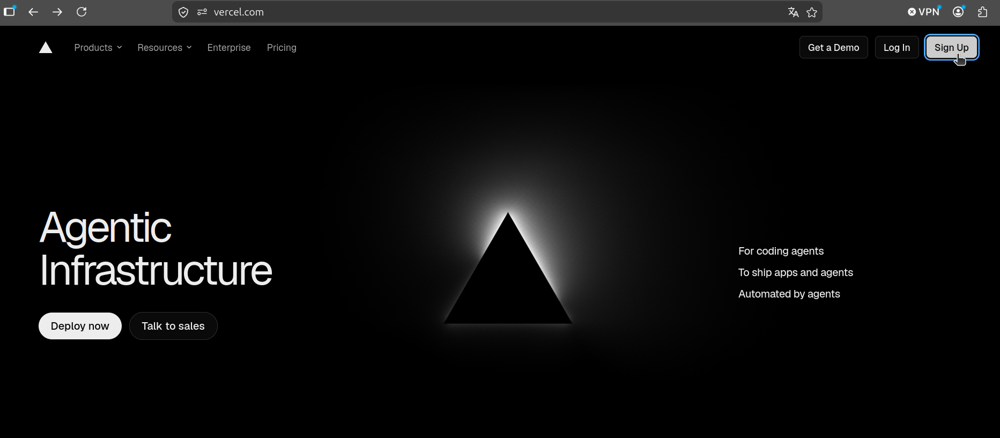
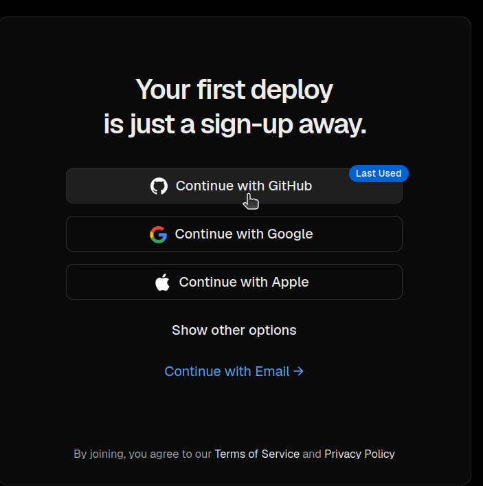
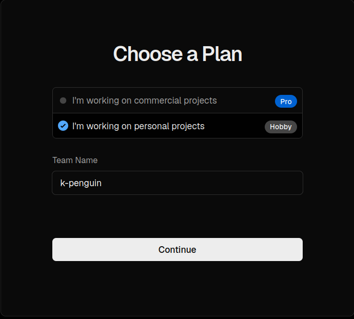
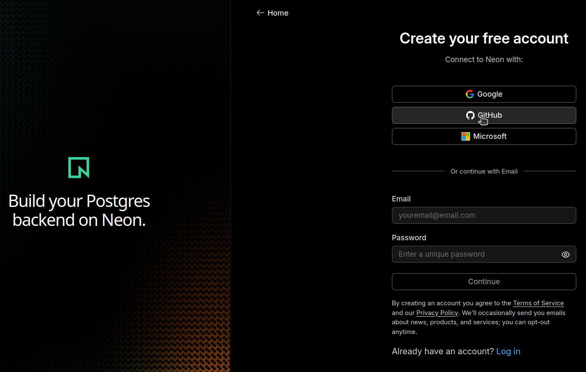
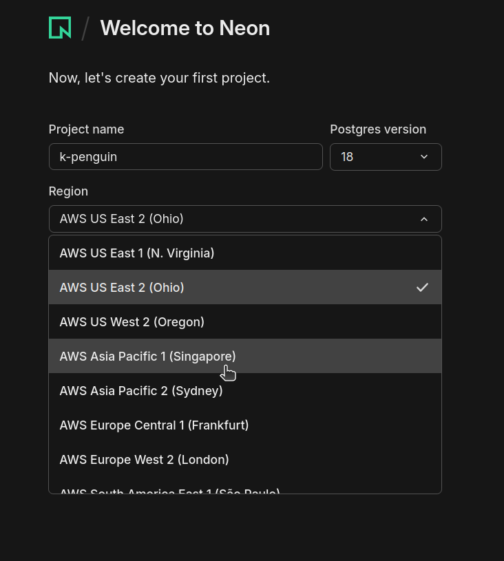
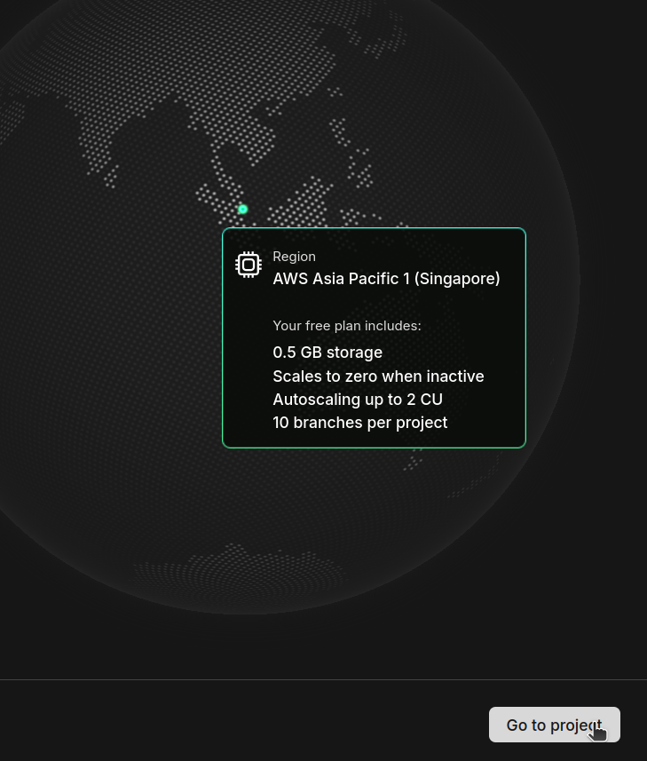
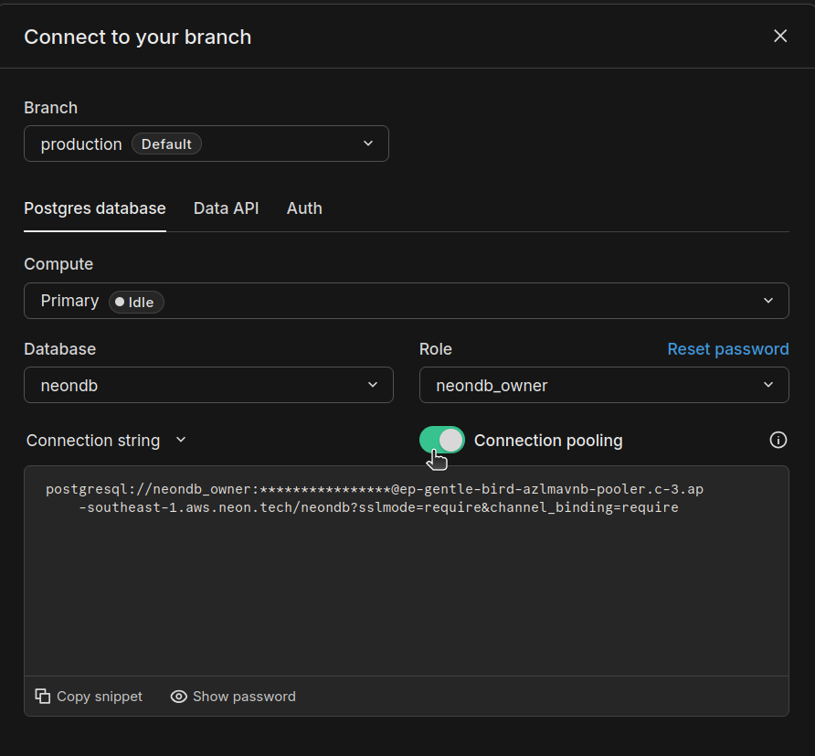
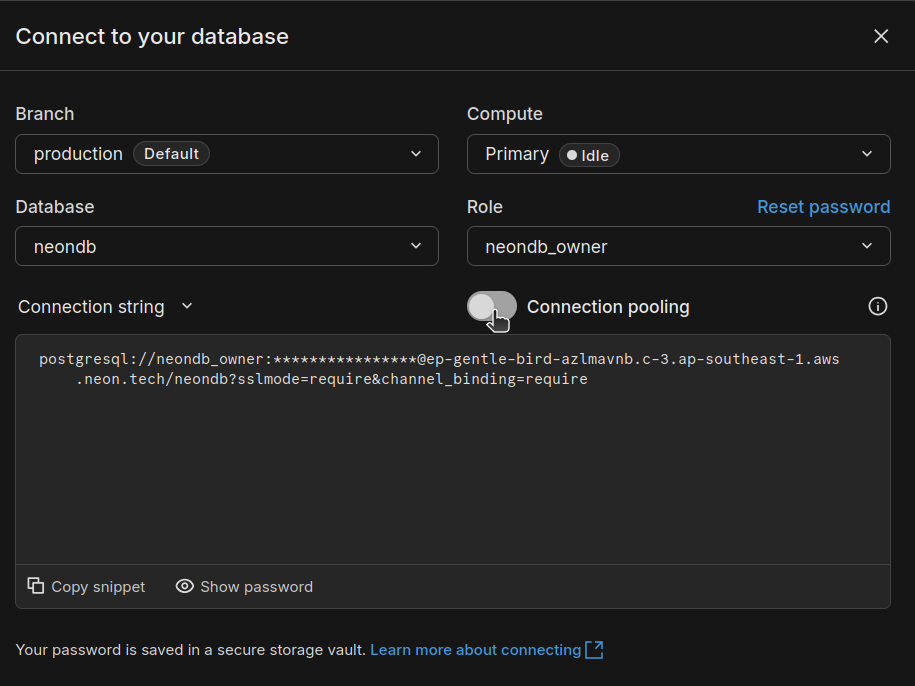
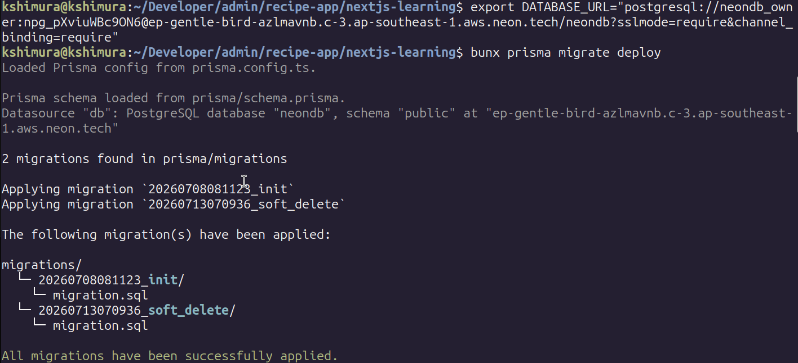
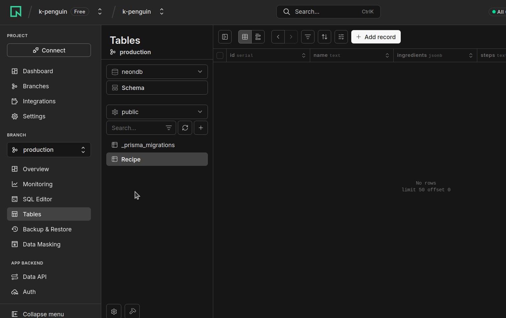

動的サイトを
Vercel + Neonで
ゼロから公開する
本記事ではGitHubアカウントを作った直後から、Webアプリ（フロント & API: Next.js (Route Handlers) / DB: PostgreSQL
on
Neon）をVercelで公開するまでを、1つずつ画面を確認しながら進めます。
※本編の構築ゴールは本番URLでの動作確認（5章）までです。
任意の付録章に独自ドメイン設定がありますが、ドメイン代の実費がかかります。
記載のない項目はVercel / Neon ダッシュボードのデフォルトのままでOKです。
デプロイするアプリのpackage.json修正（postinstallの追加）とローカルでのビルド確認まで済ませてください。
全体像 — Webページが開くまで
手を動かす前に、これから作るものの全体像を掴みます。
ブラウザに
https://example.vercel.app
と打ってからページが表示されるまで、
裏では次のことが起きています。
ブラウザ
Vercel Edge
Network
Serverless Function
(Route Handlers)
Neon Postgres
(pooled接続)
- リクエスト受信 — VercelのEdge NetworkがユーザーのリクエストをGitHub連携済みの最新デプロイへルーティングする
-
画面 & API —
静的なページはEdge/CDNからそのまま返し、
/api/...へのリクエストはNext.jsのRoute HandlerをServerless Functionとして実行する - データ取得 — Route HandlerがNeonへpooled接続でSQLを投げ、結果をJSONで返す
- スケール — Functionはリクエストのたびに必要な分だけ起動し、アイドル時は課金されない。Neon側のコンピュートも一定時間アクセスが無いと自動サスペンドする
登場するサービスと役割
環境準備
アカウントを3つ用意します。AWS版と違い、IAMユーザーやCLIの事前設定は不要です。
用意するもの
右上の「Sign Up」から登録します。

GitHub連携しておくと、後のリポジトリ連携やCLIログインがスムーズになります。

Hobbyプランは個人・非商用利用なら無料なので、学習用途ではこちらを選びます。


Vercel Hobbyプランは個人・非商用利用の範囲、Neon Freeプランはプロジェクトあたり0.5GBストレージ・月100 CU-hourの範囲で無料です。学習用途ならまず超えません。
Neon — PostgreSQL を用意する
アプリが使うPostgreSQLをNeon上に作ります。
VPC・サブネット・セキュリティグループの設計は不要。DBを1つ作るだけです。
手順
recipe-app
など分かりやすいものに。Postgresのバージョンはデフォルトの18のままでOK。
リージョンはAWS Asia Pacific 1 (Singapore)を選びます。

物理的な距離が離れるほど往復時間（レイテンシ）が増え、特に1リクエストで複数回SQLを投げる処理では体感の遅さに直結します。
Neonには東京リージョンが無いため、日本からはSingaporeが最もレイテンシが小さく、デフォルトのOhio(米国)より有利です。
Go to project をクリックしてプロジェクト画面に進みます。

Prismaの準備 — マイグレーションを適用
手元にある既存のマイグレーションファイル（prisma/migrations/）を、まだ空のNeon上のDBに適用します。
アプリのコードは一切変更しません。
prisma migrate dev
ではなく
prisma migrate deploy。既存のマイグレーションを「適用するだけ」の本番向けコマンドです。
Neonから接続文字列を2本取得する
Neonのプロジェクトダッシュボードで「Connect」を開きます。
デフォルトでConnection pooling がON（ホスト名に
-pooler
が付く）の接続文字列が表示されるので、まずこれをコピーしておきます。
こちらは今は使わず、4章でVercelに設定する
DATABASE_URL
になります。

▲ ここでコピーする1本目（pooled / ホスト名に-poolerあり）。4章でVercelのDATABASE_URLに設定します。
-pooler
の付かないdirect接続の文字列に切り替わります。こちらは、この直後に実行するマイグレーションでだけ使います。
アプリの実行時（Vercel側の環境変数）には使いません。

schema.prismaの修正やVercel側の2本目の環境変数は不要。使うのはpooledの1本だけです。
ローカルから一度だけ実行
&channel_binding=require
など&を含むため、必ずダブルクォートで囲むのを忘れずに。
Applying migration ...
のログが流れ、最後に
All migrations have been successfully applied.
と出ればOK。

Neonダッシュボードの「Tables」からも
Recipe
テーブルが増えていることを確認できます。

Vercelへデプロイ
Vercel CLIを使い、ローカルの
nextjs-learning/
ディレクトリから直接デプロイします。
CLIはコマンドを実行したディレクトリをそのままプロジェクトルートとして扱うため、GUIで必要になる「Root
Directory」の設定は不要です。
VercelにはGitHubリポジトリと連携し、pushをトリガーに自動デプロイする機能もある。
mainブランチへのpushで本番環境へ、それ以外のブランチやPRへのpushでプレビュー環境へ、それぞれ自動でデプロイされる。
このハンズオンではローカルからの挙動を理解しやすいCLIデプロイを採用しているが、実務ではGitHub連携の方が一般的。
連携する場合は、Vercelダッシュボードの「Add New...」→「Project」からリポジトリをインポートする。
このハンズオンのようにCLIで先にプロジェクトを作成した場合も、後からGitHub連携に切り替えられる。
「Projects」から対象プロジェクトを開き、「Connect Git Repository」からリポジトリを選択すればよい。
手順
nextjs-learning/
に移動してCLIをログインします。ブラウザが開くので、そこでGitHubアカウントでの認証を確認します。
Vercel Plugin for Claude Code is not installed. Would you
like to install it now? (Y/n)
と聞かれることがあります。これはClaude Code向けの統合プラグインで、本ハンズオンのデプロイ手順とは無関係です。
n（スキップ）を選んで進めてください。
途中で表示される「Which project?」は矢印キーで選ぶ選択式になっています。
まだVercel上にプロジェクトが存在しないため、「Create a new project」を選んでください（「Search all projects」は既存プロジェクトを探す方の選択肢）。
nextjs-learning/
の中で実行するため、ディレクトリの選択はデフォルト（./）のままでOK。最後の「Customize settings?」「Customize advanced settings?」もNext.jsが自動検出されているため、どちらもNでOK。
-pooler
が付く方）を、
DATABASE_URL
として登録します。「Store as sensitive?」はY（デフォルト）のままでOK。パスワードを含む接続文字列なので、登録後はダッシュボード上でも値を読み返せない状態にしておきます。
「Value?」には接続文字列をダブルクォートを付けずに素の文字列だけ貼り付けます（3章のシェル
exportとは違い、対話プロンプトなので&をシェルに解釈させる心配はありません）。誤ってクォート付きで貼り付けると「Value includes surrounding quotes」と警告されるので、Re-enterを選んでクォート無しで貼り直します。
「Environments?」はチェックボックス形式。
aキーで全選択してからEnterで確定します。
ビルドログが
bun install
→
postinstall (prisma generate)
→
next build
の順に流れ、完了すると本番URLがターミナルに出力されます。
ページが表示されればOKです。
Production
行はこの1回のデプロイに紐づく固有URLで、デプロイのたびに変わります。Aliased
行は常に最新のProductionデプロイを指す固定ドメインで、以後もこのURLは変わりません。
まずターミナルの
vercel --prod
の出力自体にビルド失敗のエラーが出ていないか確認する。ビルドは成功したのにアクセス時だけエラーになる場合は、
vercel logs <AliasedまたはInspectのURL>
でランタイムログを確認する。多くの場合の原因は、
DATABASE_URL
環境変数の設定漏れ・入力ミス、またはNeon側の接続情報の不一致。
動作確認
本番URLで実際にCRUDが動くか、Neonまで届いているかを確認します。
ブラウザで確認
-
本番URL（
https://<プロジェクト名>.vercel.app）を開き、レシピの検索・登録・編集・削除（および削除の取り消し）を一通り試す - ページをリロードしても内容が残っていれば、Neonへの書き込みと読み込みが両方できている証拠
付録: カスタムドメイン
任意の章です。.vercel.app
ではなく自分のドメインで公開したい場合の参考に。
ドメイン自体の購入費用（実費）はかかりますが、TLS証明書の発行・更新はVercelが自動で行うため、ACMやRoute
53のような別サービスの設定は不要です。
手順 1 — ドメインを取得
お名前.com・Google Domains系のレジストラなど、外部サービスで好きなドメインを購入します（実費がかかります）。
手順 2 — Vercelにドメインを追加
手順 3 — レジストラ側でDNSレコードを設定
ドメインを購入したレジストラの管理画面で、Vercelが表示したレコードをそのまま追加します。
反映まで数分〜数時間かかる場合があります。
https://自分のドメイン
でページが開くようになります。ECS版で必要だったACMでの証明書リクエストやRoute 53でのレコード作成に相当する作業を、Vercelが1画面でまとめて代行してくれるイメージです。
片付け
無料枠範囲のため、そのままずっと公開し続けて問題ありません。
Vercel・NeonともにNAT
GatewayやRDSのような時間課金リソースが存在しません。
放置していても料金は発生しません。
続けない場合は、参考までに以下の手順で削除できます。
CLIから削除する場合は
vercel remove <プロジェクト名>
でも同様に削除できます。
無料枠の範囲なら金銭的な被害は無いので、削除するかどうかは完全に任意です。